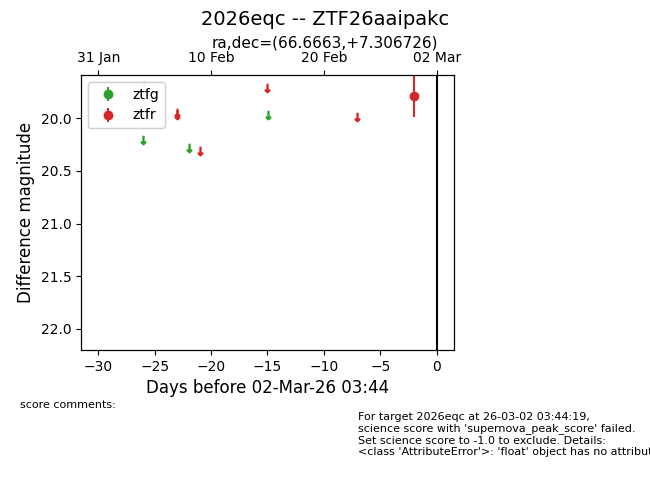
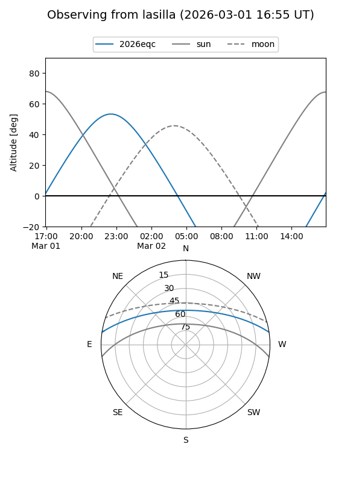
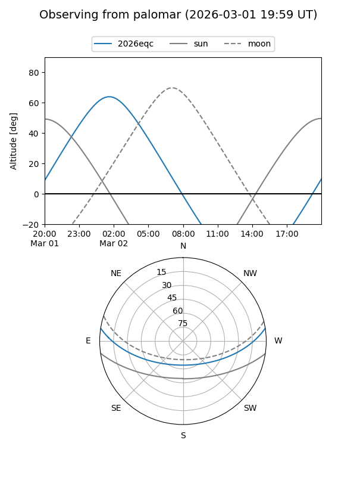

2026eqc
Target 2026eqc at 2026-03-02 03:45
Aliases and brokers:
FINK: link
Lasair: link
ALeRCE: link
TNS: link
YSE: link
alt names
ZTF26aaipakc (ztf,fink_ztf)
2026eqc (tns,yse)
Coordinates:
equatorial (ra, dec) = 66.6663,+7.30673
equatorial (HMS+DMS) = 04:26:39.92,+07:18:24.22
galactic (l, b) = (187.5219,-27.59935)
Flags:
Photometry:
last ztfr=19.79
1 ztfr detections
Lightcurve

Visibility


Additional plots